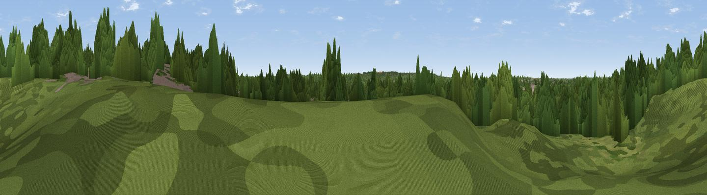

Forester's Hill
#45756 in England · top 85% of its area beats it · near Chavey Down · path 207 mWhere it is
The exact computed spot (SU 88940 69110). Click the marker for map links.
Public access: the nearest public right of way is about 207 m away — the final stretch may cross private land. Computed from Natural England's CRoW access layer and OpenStreetMap rights of way — not the legal definitive map. Always verify locally.
The view, rendered

A 360° render of this exact spot computed from the terrain model, tree cover and land cover — summer colours, afternoon light, calibrated against photographs of famous viewpoints. Real trees, hedges and buildings will differ in detail.
The panorama
Grey silhouette: terrain skyline in each direction (720 bearings, Earth curvature and refraction included). Dashed green: skyline with trees (+15 m) and buildings (+8 m) as obstacles. Blue strip: how far the ground is visible on each bearing.
Where the view opens
Wedge length = distance to the farthest visible ground on that bearing (vegetation-aware). Rings at 10, 25 and 50 km.
What fills the view
70% woodland · 20% built-up · 9% grassland · 1% cropland
Angular shares of the visible panorama (visual magnitude), not map area. Landscape diversity 0.37 (0–1 Shannon).
Key numbers
More beautiful places nearby
The staircase of upgrades: each row has a higher view potential than everything closer. Driving times are estimates from straight-line distance, calibrated against real road routing — check an actual route before setting out.
| Place | Direction | Drive | Score |
|---|---|---|---|
| Tower Hill | SSE · 3 km | ~7 min | 14.4 |
| Gravel Hill | SSW · 4 km | ~9 min | 15.0 |
| Viewpoint near Bagshot | S · 4 km | ~9 min | 29.8 |
| Viewpoint near Bagshot | S · 7 km | ~14 min | 31.1 |
| Viewpoint near Crowthorne | SSW · 7 km | ~14 min | 32.5 |
| High Curley Hill | SSE · 8 km | ~16 min | 38.5 |
| Windsor Castle | NE · 11 km | ~21 min | 39.8 |
| Viewpoint near Upper Hale | SSW · 20 km | ~33 min | 46.8 |
51.41404, -0.72249 · source: osm peak · position refined by local search. Computed location — check access rights before visiting.